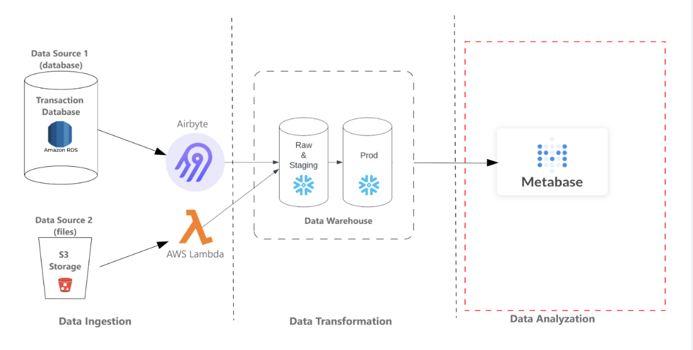
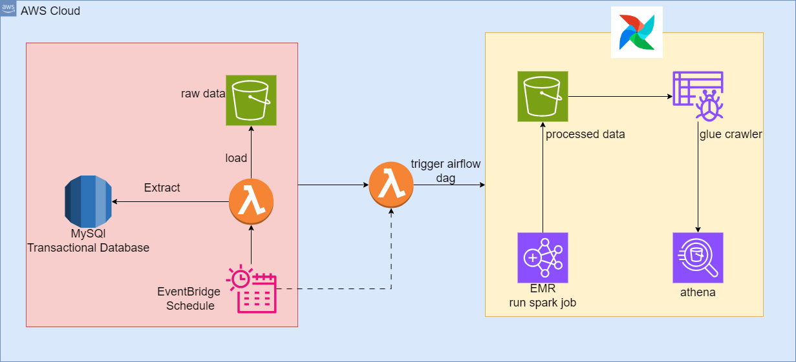
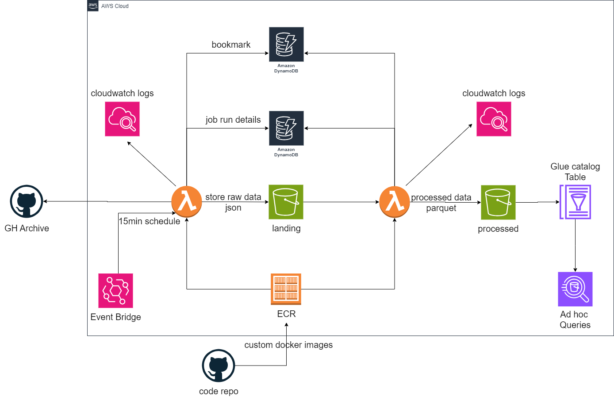
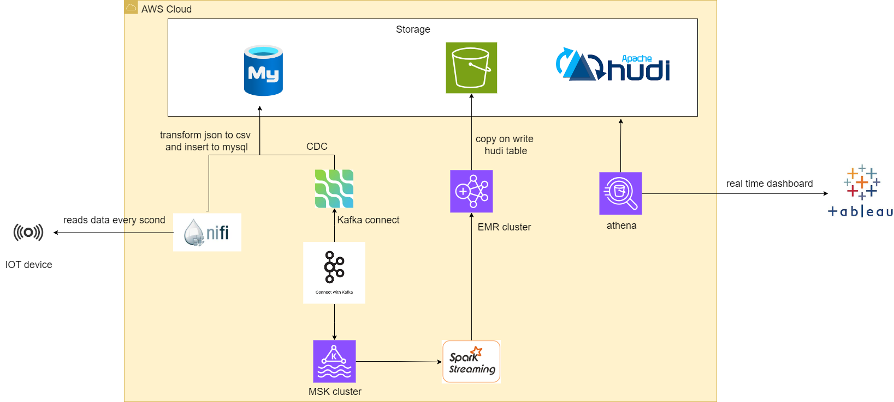

Analytical Data Engineering Project
This project involves Analytical Data Engineering,
focusing on the data ingestion from various sources and loading into the Snowflake data warehouse.
The data undergoes transformation processes within the warehouse to prepare it for Business Intelligence (BI) usage.

ELT Pipeline with DBT & Snowflake

Built a robust and scalable data analytics pipeline that efficiently processes raw data from Snowflake, transforms it using DBT, and provides insightful visualizations via Preset.io dashboards.
Batch Processing Pipeline

Built a batch processing pipeline for processing data from an internal transaction database and performs data transformation and aggregation on retail data using Spark.
Serverless ELT Pipeline on AWS

Implemented a serverless ELT (Extract, Load, Transform) pipeline using AWS services. The project focuses on ingesting data from GHArchive, performing scheduled data transformations, and storing the results in S3 for further analysis.

In this project, I leveraged IoT sensor data to construct a cutting-edge data lakehouse, enabling real-time monitoring of bus locations.
By harnessing GPS data streamed from devices installed on buses, particularly sourced from the Toronto Transit Commission (TTC) via the Rest Bus API,
I created a dynamic dashboard. This dashboard offers users a comprehensive view of current bus locations, enhancing transit management and improving
commuter experiences.